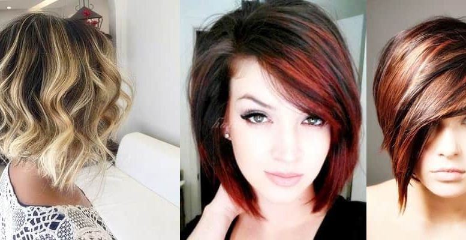

Curly Girl Method
The Curly Girl Method is an approach to hair care designed for naturally curly hair that has not been chemically
relaxed. It is similar to the "no poo" method in that it discourages the use of shampoo. Among other things, it calls for the
use of conditioner in place of shampoo (also called "conditioner washing" or "co-washing"), no silicones
(used in many commercial conditioners and styling products), the use of a diffuser when blowdrying, and no combs, brushes,
or terrycloth towels. It also includes tips for using hair gel and other styling products. The aim in general is to treat naturally
curly hair gently, minimizing damage to the hair cuticle; to keep it moisturized, since curly hair is more prone to dryness than straight
hair; and, perhaps most significantly, to accentuate rather than interfere with the hair's natural curl pattern.
Hair coloring, or hair dyeing, is the
practice of changing the hair color. The main reasons for this are cosmetic: to cover gray or white hair, to change to a color regarded as
more fashionable or desirable, or to restore the original hair color after it has been discolored by hairdressing processes or sun bleaching.
Hair coloring can be done professionally by a hairdresser or independently at home. Today, hair coloring is very popular, with 75% of women[1] and
18% of men living in Copenhagen having reported using hair dye according to a study by the University of Copenhagen. At-home coloring in the
United States reached $1.9 billion in 2011 and is expected to rise to $2.2 billion by 2
Hair straightening is a hair styling technique used since the 1890s involving the flattening and straightening of hair in order to give it a smooth, streamlined, and sleek appearance. It became very popular during the 1950s among black males and females of all races.
It is accomplished using a hair iron or hot comb, chemical relaxers, Japanese hair straightening,[1] Brazilian hair straightening, or roller
set/blowdryer styling. In addition, some shampoos, conditioners, and hair gels can help to make hair temporarily straight.
The process is often called "rebonding" in some countries from Southeast Asia (e.g. Indonesia, Singapore, Malaysia and Philippines).
The term "rebonding" was first used by REDS Hairdressing from Singapore in the late 1980s,[citation needed] which slowly spread to the rest
of the region. If done often, flat irons and chemicals can be damaging to hair. Excessive straightening often results in split ends. However,
heat protectant sprays can decrease the damage.

A hairstyle, hairdo, or haircut
refers to the styling of hair, usually on the human scalp. Sometimes, this could also mean an editing of facial or body hair. The fashioning
of hair can be considered an aspect of personal grooming, fashion, and cosmetics, although practical, cultural, and popular considerations
also influence some hairstyles.[1] The oldest known depiction of hair braiding dates back about 30,000 years. In ancient civilizations,
women's hair was often elaborately and carefully dressed in special ways. In Imperial Rome, women wore their hair in complicated styles.
From the time of the Roman Empire[citation needed] until the Middle Ages, most women grew their hair as long as it would naturally grow.
During the Roman Empire as well as in the 16th century in the western world, women began to wear their hair in extremely ornate styles.
In the later half of the 15th century and on into the 16th century a very high hairline on the forehead was
considered attractive. During the 15th and 16th centuries, European men wore their hair cropped no
longer than shoulder-length. In the early 17th century male hairstyles grew longer, with waves or curls being considered desirable.
Cosmetics are substances or products used to enhance or alter the appearance of the face or fragrance and texture of the body. Many cosmetics are designed for use of applying to the face, hair, and body.
They are generally mixtures of chemical compounds; some being derived from natural sources (such as coconut oil), and some being synthetics
or artificial.[1] Cosmetics applied to the face to enhance its appearance are often called make-up or makeup. Common make-up items include:
lipstick, mascara, eye shadow, foundation. Whereas other common cosmetics can include skin cleansers and body lotions, shampoo and conditioner,
hairstyling products (gel, hair spray, etc.), perfume and cologne.In the U.S., the Food and Drug Administration (FDA), which regulate
cosmetics,[2] defines cosmetics as "intended to be applied to the human body for cleansing, beautifying, promoting attractiveness, or
altering the appearance without affecting the body's structure or functions". This broad definition includes any material intended for use
as a component of a cosmetic product. The FDA specifically excludes soap from this category.[3]
Bridal Makeup Trends
Bridal makeup is an essential part of the wedding planning process and designing the perfect look for your wedding day is my number one priority.
Here you will find some of the latest beauty trends along with coordinating makeup vision boards to serve as inspiration.
Bridal Makeup & Hair Trials
When looking for a team of Bridal Makeup and Hair Artists for your wedding day, it is so important to work with a company that
will make you feel comfortable. Our team will provide you with the utmost service and do everything possible in making sure you are
looking and feeling your very best on your big day! The day of the trial we are there to help answer any questions you have and work
with you to get the look you want for your wedding day. Once we have achieved your desired look and you’re all booked with us, we will
create a file with all the details needed for our artists to create a smooth-sailing atmosphere the day of your wedding.
We highly recommend to all our Brides to book their wedding date and/or trial ASAP while the date is still open. Our team is booked nearly
a year in advance.
Makeup & Hair Trials at our East Rutherford, NJ location include:
Choice of Airbrush or Traditional makeup.
Lashes of your choice: strip, individuals or Victoria’s Duo Process Lash Application.
Hair clip-in extension application with desired hairstyle.
Once the exact bridal look is achieved, a picture is taken and a detailed face chart is noted showing exactly which colors and techniques
were used. The photo is placed in your file for the day of your event.
Bridal VIP Service
What Bride wouldn’t want to be completely pampered on their wedding day? One of our most popular services we offer is VIP.
On your special day, VIP will have you feeling wonderful, leaving behind all stress and worries! We will send our Hair and Makeup
artists back at your desired time for touch-ups during your wedding service, picture taking, and reception. This also includes helping
the bride with her dress, veil, hair, etc.
We are with you as long as you need us!. An hourly rate on top of the bride’s fee is applicable.